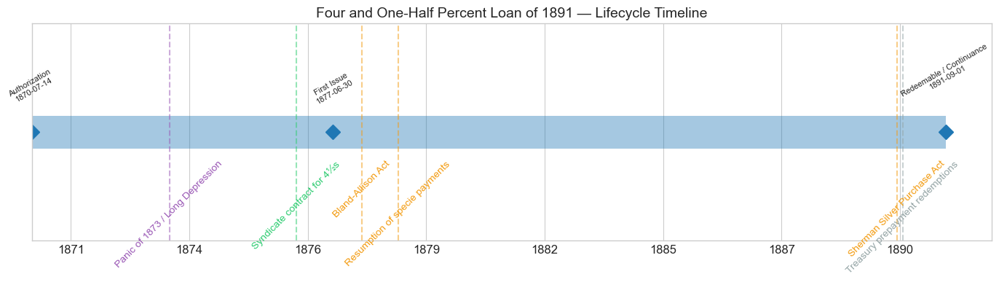
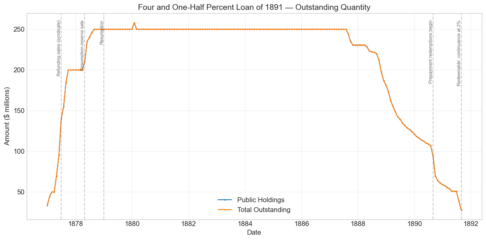
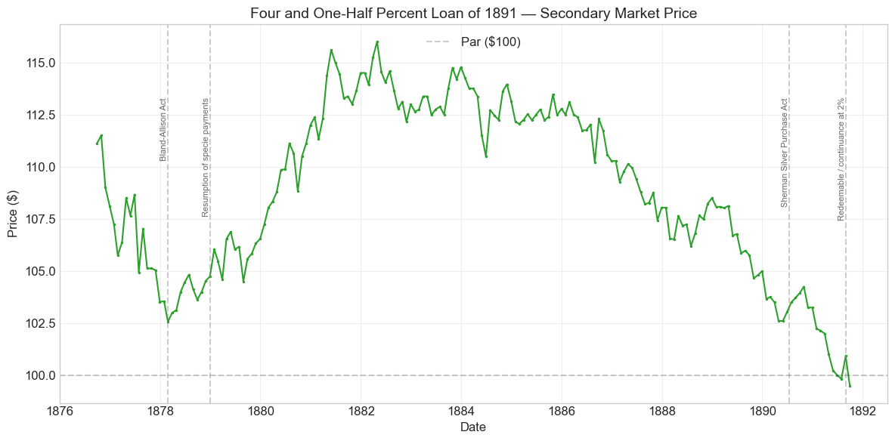
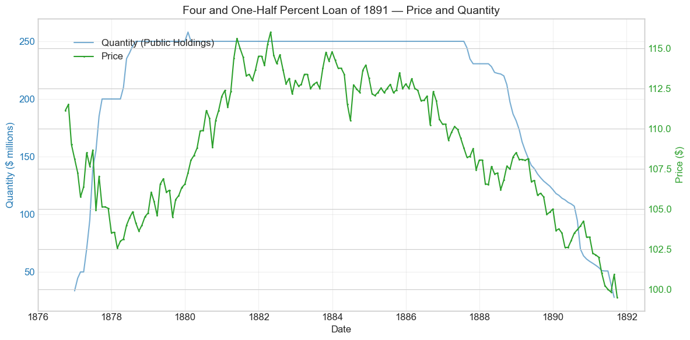
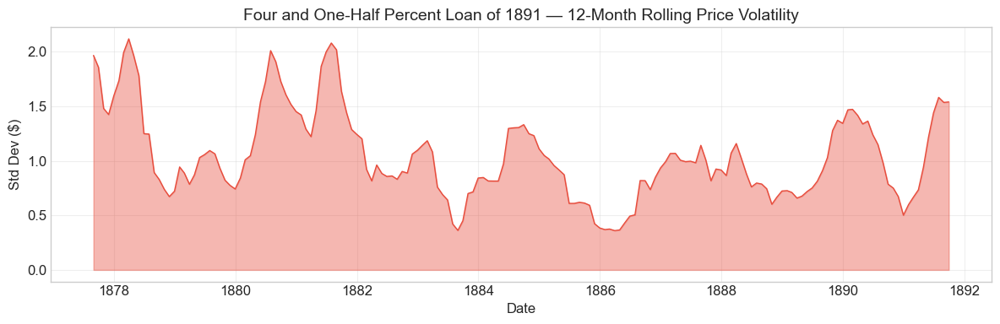

Bond Biography: Four and One-Half Percent Loan of 1891#
The Middle Leg of the Great Refunding#
An enhanced chapter from the Hall-Payne-Sargent US Federal Bond Database (2,857 issues, 1776–1960)
Bond ID (L1): 20120 | Category: Interest Bearing > Marketable > Long Term Bond
import pandas as pd
import numpy as np
import matplotlib.pyplot as plt
import matplotlib.patches as mpatches
import datetime
import warnings
warnings.filterwarnings('ignore')
plt.style.use('seaborn-v0_8-whitegrid')
plt.rcParams.update({'figure.figsize': (12, 6), 'font.size': 12,
'axes.titlesize': 14, 'axes.labelsize': 12})
# Load the bond database
store = pd.HDFStore('../data/BondDF.h5', mode='r')
BondList = store['BondList']
BondQuant = store['BondQuant']
BondPrice = store['BondPrice']
store.close()
BondQuant_T = BondQuant.transpose()
BondPrice_T = BondPrice.transpose()
bond_id = 20120
print(f'Loaded data for: Four and One-Half Percent Loan of 1891 (ID: 20120)')
/Users/thomassargent/anaconda3/lib/python3.9/site-packages/pandas/core/arrays/masked.py:60: UserWarning: Pandas requires version '1.3.6' or newer of 'bottleneck' (version '1.3.5' currently installed).
from pandas.core import (
Loaded data for: Four and One-Half Percent Loan of 1891 (ID: 20120)
Overview: Selling Bonds in a Silver Storm#
The Four and One-Half Percent Loan of 1891 — the “funded loan of 1891,” or simply the “4½s” — was the middle leg of the great post-Civil War refunding. The Refunding Act of July 14, 1870 (as amended January 20, 1871) authorized the Treasury to exchange the expensive 6 percent war debt for three descending tiers of new coin bonds: 5 percents redeemable after ten years, 4½ percents after fifteen, and 4 percents after thirty. The 5s of 1881 came first (sold 1871–75); the 4s of 1907 came last and largest (see the companion chapter on Bond 20121, which tells the full story of the sequence). In between stood the 4½s: about $250 million of fifteen-year coin bonds, redeemable at the government’s pleasure after September 1, 1891.
What makes the 4½s distinctive within the trilogy is when and how they were sold, and how they died. They were placed in 1876–78 — the syndicate contract dates from August 1876, with the bulk of the sales managed by John Sherman, Secretary of the Treasury from March 1877 — at precisely the moment the silver movement was reaching its first legislative climax. The bonds promised payment “in coin of the present standard value,” and while Sherman’s agents were asking European investors to accept 4½ percent for fifteen years, Congress was debating (and in February 1878 passing, over President Hayes’s veto) the Bland–Allison Act, and resolving that the very bonds being sold could lawfully be paid in silver dollars. That the loan was fully placed anyway — partly through the Rothschild–Belmont–Seligman–First National syndicate, partly by subscriptions from the general public — was an early demonstration that American credit could survive American politics.
And where its siblings ended in an ordinary call, the 4½s ended in an experiment. When the September 1, 1891 redeemability date arrived, Secretary Charles Foster offered holders a choice: present the bonds for redemption, or continue them at the pleasure of the government at only 2 percent interest. Roughly $25 million of holders — mostly national banks that needed the bonds as backing for their note circulation — took the 2 percent offer, creating the “continued 4½s,” which the database tracks as a separate issue (the Funded Loan of 1891, continued at 2%). The rest were paid off. It was, in effect, a voluntary refinancing at the option of the holder — a device the Treasury would use again — and it makes this bond a small landmark in the history of debt management. During its life on the secondary market the bond’s average price was $108.89, ranging from $99.50 to $116.00 across 181 monthly observations from September 1876 to September 1891.
Historical Context: Depression, Silver, and the Road to Resumption#
The following major events framed this bond’s lifetime:
Date |
Event |
Category |
|---|---|---|
1873–1879 |
Panic of 1873 / Long Depression |
Crisis |
1875-01-14 |
Resumption Act (specie payments to resume Jan 1, 1879) |
Monetary |
1876-08-24 |
Syndicate contract for the 4½ percents |
Fiscal |
1878-02-28 |
Bland–Allison Act (silver purchases begin) |
Monetary |
1879-01-01 |
Resumption of specie payments |
Monetary |
1890-07-14 |
Sherman Silver Purchase Act |
Monetary |
1890-08/09 |
Treasury offers prepayment of the 4½s (Windom) |
Fiscal |
1890-11 |
Baring crisis in London; money-market stringency |
Crisis |
1891-09-01 |
Bond redeemable; Foster’s continuance-at-2% offer |
Fiscal |
The Long Depression: headwind and tailwind#
The 4½s were born in the trough of the depression that followed the Panic of 1873. As in the case of the 4s of 1907, the depression cut both ways. Falling prices and idle capital left investors at home and abroad hungry for safe securities, and the yields they would accept on government debt declined steadily through the mid-1870s — without that, a 4½ percent fifteen-year bond could not have been sold at par in 1876. At the same time, the depression bred the political forces — greenbackism, then free silver — that constituted the bond’s chief risk. The database’s first quotations, from the autumn of 1876, show the bonds around $109–111 in currency — but since the greenback still stood at a discount against gold, most of that apparent premium was simply the gold value of a coin bond expressed in depreciated paper.
The silver question during the sales#
The bonds were sold under the shadow of the “coin” clause. The Coinage Act of 1873 had dropped the standard silver dollar; as silver’s gold price collapsed, a powerful movement demanded its restoration at the old 16-to-1 ratio, which would have allowed the government to service its “coin” bonds in silver worth substantially less than gold. The 4½s were being marketed in Europe at exactly the moment this agitation crested: the Bland bill passed the House in late 1877, the Senate’s Matthews resolution (January 1878) declared bond payments in silver lawful, and the Bland–Allison Act became law in February 1878. Sherman’s correspondence and later Recollections record his anxiety that these declarations would wreck the refunding among foreign holders; sales did hesitate during the winter of 1877–78. But the Treasury continued in practice to pay in gold, and the market learned to treat the silver threat as a fluctuating risk premium rather than a certainty.
Resumption and the golden decade#
The resumption of specie payments on January 1, 1879 — prepared in part with gold that Sherman raised by selling bonds of this very refunding family — closed the gap between currency and coin prices. From 1879 the 4½s’ quotations are unambiguous gold prices, and they tell a story of triumph: the bond climbed from roughly par-plus-4 in 1879 to a peak near $116 in 1882, as federal surpluses mounted, the debt shrank, and safe coin assets grew scarce. Thereafter the premium melted along the mechanical glide path dictated by the approaching September 1891 redeemability date.
The endgame, 1890–1891#
The bond’s last two years were crowded. The Sherman Silver Purchase Act (July 1890) doubled the Treasury’s silver purchases and planted the seeds of the gold-reserve crisis to come; the Baring crisis (November 1890) tightened money markets on both sides of the Atlantic. Against this backdrop the Treasury, holding a large surplus, began in the autumn of 1890 to redeem the 4½s ahead of maturity — Secretary Windom’s offers to prepay the bonds (with allowance for the interest holders surrendered) released tens of millions into a strained money market and cut the outstanding stock roughly in half within a few months. When the redeemability date of September 1, 1891 arrived under Secretary Foster, the residue was either paid off or continued at 2 percent. The 4½s thus wound down on the very eve of the gold crisis of the 1890s: the Panic of 1893 postdates this bond, falling instead on its continued successor and on the still-outstanding 4s of 1907.
# Bond Lifecycle Timeline
fig, ax = plt.subplots(figsize=(14, 4))
# Key dates
dates = [('Authorization', '1870-07-14'), ('First Issue', '1877-06-30'), ('Redeemable / Continuance', '1891-09-01')]
events = [('Panic of 1873 / Long Depression', '1873-09-18', 'crisis'),
('Syndicate contract for 4½s', '1876-08-24', 'legislation'),
('Bland-Allison Act', '1878-02-28', 'monetary'),
('Resumption of specie payments', '1879-01-01', 'monetary'),
('Sherman Silver Purchase Act', '1890-07-14', 'monetary'),
('Treasury prepayment redemptions', '1890-09-01', 'other')]
import matplotlib.dates as mdates
from datetime import datetime
# Plot bond lifetime bar
d0 = datetime.strptime(dates[0][1], '%Y-%m-%d')
d1 = datetime.strptime(dates[-1][1], '%Y-%m-%d')
ax.barh(0, (d1 - d0).days, left=mdates.date2num(d0), height=0.3,
color='#1f77b4', alpha=0.4, label='Bond Lifetime')
# Mark key dates
for label, date_str in dates:
d = datetime.strptime(date_str, '%Y-%m-%d')
ax.plot(mdates.date2num(d), 0, 'D', color='#1f77b4', markersize=10)
ax.annotate(f'{label}\n{date_str}', (mdates.date2num(d), 0.25),
ha='center', va='bottom', fontsize=8, rotation=30)
# Mark historical events
colors = {'war': '#e74c3c', 'crisis': '#9b59b6', 'legislation': '#2ecc71', 'other': '#95a5a6', 'monetary': '#f39c12'}
for name, date_str, cat in events:
d = datetime.strptime(date_str, '%Y-%m-%d')
ax.axvline(mdates.date2num(d), color=colors.get(cat, 'gray'), alpha=0.5, linestyle='--')
ax.annotate(name, (mdates.date2num(d), -0.25), ha='center', va='top',
fontsize=10, rotation=45, color=colors.get(cat, 'gray'))
ax.set_yticks([])
ax.xaxis.set_major_formatter(mdates.DateFormatter('%Y'))
ax.set_title('Four and One-Half Percent Loan of 1891 — Lifecycle Timeline')
ax.set_ylim(-1, 1)
plt.tight_layout()
plt.show()

Bond Features#
Feature |
Detail |
|---|---|
Name |
Four and One-Half Percent Loan of 1891 (“Funded Loan of 1891”) |
Authorizing Act |
July 14, 1870, as amended January 20, 1871 |
First Issue Date |
June 30, 1877 (syndicate sales began under the contract of August 1876) |
Term |
15 years |
Redeemable |
After September 1, 1891, at the pleasure of the United States |
Coupon Rate |
4.5% |
Payment Frequency |
Quarterly (March, June, September, December) |
Payable in Coin |
Yes — “coin of the present standard value” (Act of 1870) |
Peak Outstanding |
~$250 million (plateau 1878–1890; single-month database peak $258 million, January 1880) |
Price Sold |
Par (100), in coin |
Special Privilege |
Eligible as security for national bank note circulation |
Disposition at Maturity |
Holder’s option: redemption in cash, or continuance at 2% (the “continued 4½s,” a separate database record) |
Like the other funded-loan issues, the 4½s were available both as coupon bonds and as registered stock, in denominations reaching down to $50, so that the loan could be held by savers as well as by banks and foreign investors.
# Display full bond features from database
row = BondList.loc[20120]
display_cols = [
"Treasury's Name Of Issue", 'Authorizing Act', 'Term Of Loan',
'First Issue Date', 'First Redemption Date', 'Final Redemption Date',
'Coupon Rate', 'Coupons Per Year', 'Callable', 'Coin',
'Authorized Amount', 'Price Sold'
]
print('Bond Features from Database:')
print('=' * 55)
for col in display_cols:
if col in row.index:
print(f' {col:<30} {row[col]}')
Bond Features from Database:
=======================================================
Treasury's Name Of Issue Four and One-Half Percent Loan of 1891
Authorizing Act July 14, 1870
Term Of Loan 15 years
First Issue Date 1877-06-30 00:00:00
First Redemption Date NaT
Final Redemption Date NaT
Coupon Rate 4.5
Coupons Per Year 4.0
Callable 0.0
Coin 1.0
Authorized Amount nan
Price Sold 1.0
Bond Quantity Over Time#
The bond’s outstanding quantity peaked at $258.00 million on January 31, 1880 (a single-month reading; the loan’s long plateau stood at $250 million). Data span December 1876 to August 1891 (177 monthly observations).
# Bond quantity over time
fig, ax = plt.subplots(figsize=(12, 6))
for stype in ['Public Holdings', 'Total Outstanding']:
try:
s = BondQuant_T.loc[(20120, stype)]
s = s[s.notna()]
if len(s) > 0:
ax.plot(s.index, s.values / 1e6, marker='.', markersize=3, linewidth=1.5, label=stype)
except KeyError:
pass
ax.set_title('Four and One-Half Percent Loan of 1891 — Outstanding Quantity')
ax.set_xlabel('Date')
ax.set_ylabel('Amount ($ millions)')
ax.legend()
ax.grid(True, alpha=0.3)
events = {'1877-06-30': 'Refunding sales (syndicate)',
'1878-04-30': 'Resumption-reserve sale',
'1879-01-01': 'Resumption',
'1890-09-01': 'Prepayment redemptions begin',
'1891-09-01': 'Redeemable: continuance at 2%'}
for date_str, label in events.items():
d = pd.Timestamp(date_str)
ax.axvline(d, color='gray', alpha=0.4, linestyle='--')
ax.text(d, ax.get_ylim()[1]*0.97, label, rotation=90, va='top', ha='right', fontsize=8, alpha=0.7)
plt.tight_layout()
plt.show()

Quantity Analysis: Raised in Two Years, Retired in One#
The ramp-up, 1876–1878. The steep left-hand slope is the refunding operation itself. Under the contract of August 24, 1876 — negotiated by Sherman’s predecessor Lot M. Morrill with the banking syndicate — and then under Sherman’s own management from March 1877, the 4½s were exchanged at par, dollar for dollar, for called 6 percent five-twenties. The database shows about $34 million outstanding at the end of 1876, $140 million by June 1877, and $200 million by that September, at which point Sherman shifted the refunding to the cheaper 4 percents (Bond 20121). One further tranche followed: in the spring of 1878 the Treasury sold roughly $50 million more of the 4½s — the syndicate purchase of April 1878, taken above par — largely to accumulate the gold with which Sherman would meet resumption on January 1, 1879. That brought the loan to its $250 million plateau by the summer of 1878.
The long plateau, 1878–1890. For twelve years the outstanding stock barely moved. The bonds could not be called before September 1891, the Treasury’s surplus purchases of the 1880s concentrated on other issues, and the national banks that held large blocks as note-circulation collateral had no reason to sell. The lone $258 million reading in January 1880 stands out against an otherwise flat $250 million line and is best treated as a reporting artifact rather than a genuine issuance event.
The wind-down, 1890–1891. The end came in two sharp movements, both deliberate acts of debt management. First, beginning in August–September 1890, Secretary Windom — armed with a large surplus and pressed by the money-market stringency that culminated in the Baring crisis — offered to redeem the 4½s ahead of maturity. The effect is dramatic in the data: from $107 million in July 1890 the loan fell to $70 million by September and to about $51 million by the spring of 1891. Second, at the September 1, 1891 redeemability date, Secretary Foster gave the remaining holders the option of cash redemption or continuance at 2 percent. The final observations record the exodus: $51 million in June 1891, $39 million in July, $28 million in August, after which the original 4½s disappear from the tables — reappearing in part as the roughly $25 million of continued 2 percent bonds tracked under a separate database record. As with the 4s of 1907, every large quantity movement in this bond’s life was policy, not panic.
Secondary Market Prices#
Overall Statistics (1876-09-30 to 1891-09-30): Mean $108.89, Range $99.5–$116.0, Std Dev $4.07, 181 observations.
By Period:
Period |
Mean |
Std |
Min |
Max |
Obs |
|---|---|---|---|---|---|
Start to Issue (1876-09 to 1877-06) |
$108.39 |
$1.84 |
$105.75 |
$111.5 |
10 |
Issue to End (1877-06 to 1891-09) |
$108.91 |
$4.16 |
$99.5 |
$116.0 |
172 |
Three warnings are needed before reading the chart. First, the quotations before January 1879 are greenback prices of a coin bond: with gold at a premium over paper, a bond worth par in gold was quoted above 100 in currency, and the drift down from about $111 in late 1876 to about $104 in 1878 mainly records the shrinking gold premium as resumption approached — not weakening credit. Second, after resumption the premium is genuine, and its rise to a peak near $116 in 1882 reflects the same forces documented for the 4s of 1907: chronic surpluses, shrinking supply of federal debt, and the circulation privilege, which led national banks to bid the price of eligible bonds above pure investment value. Third, the long decline from 1882 to par in 1891 is mostly mechanical: a bond redeemable at 100 on a known date must shed its premium as that date approaches. The silver agitation shows up not as a collapse but as modest sags superimposed on that glide path.
# Annotated price chart
fig, ax = plt.subplots(figsize=(12, 6))
s = BondPrice_T.loc[(20120, 'Average')]
s = pd.to_numeric(s, errors='coerce').dropna()
if len(s) > 0:
ax.plot(s.index, s.values, marker='.', markersize=3, linewidth=1.5, color='#2ca02c')
ax.axhline(100, color='black', alpha=0.2, linestyle='--', label='Par ($100)')
ax.set_title('Four and One-Half Percent Loan of 1891 — Secondary Market Price')
ax.set_xlabel('Date')
ax.set_ylabel('Price ($)')
ax.legend()
ax.grid(True, alpha=0.3)
events = {'1878-02-28': 'Bland-Allison Act',
'1879-01-01': 'Resumption of specie payments',
'1890-07-14': 'Sherman Silver Purchase Act',
'1891-09-01': 'Redeemable / continuance at 2%'}
for date_str, label in events.items():
d = pd.Timestamp(date_str)
ax.axvline(d, color='gray', alpha=0.4, linestyle='--')
ax.text(d, ax.get_ylim()[1]*0.97, label, rotation=90, va='top', ha='right', fontsize=8, alpha=0.7)
plt.tight_layout()
plt.show()

# Price and Quantity — dual-axis chart
fig, ax1 = plt.subplots(figsize=(12, 6))
# Quantity (left axis)
for stype in ['Public Holdings', 'Total Outstanding']:
try:
q = BondQuant_T.loc[(20120, stype)]
q = q[q.notna()]
if len(q) > 0:
ax1.plot(q.index, q.values / 1e6, color='#1f77b4', alpha=0.6, label=f'Quantity ({stype})')
break
except KeyError:
pass
ax1.set_xlabel('Date')
ax1.set_ylabel('Quantity ($ millions)', color='#1f77b4')
ax1.tick_params(axis='y', labelcolor='#1f77b4')
# Price (right axis)
ax2 = ax1.twinx()
p = BondPrice_T.loc[(20120, 'Average')]
p = pd.to_numeric(p, errors='coerce').dropna()
if len(p) > 0:
ax2.plot(p.index, p.values, color='#2ca02c', marker='.', markersize=2, label='Price')
ax2.set_ylabel('Price ($)', color='#2ca02c')
ax2.tick_params(axis='y', labelcolor='#2ca02c')
ax1.set_title('Four and One-Half Percent Loan of 1891 — Price and Quantity')
ax1.grid(True, alpha=0.3)
fig.legend(loc='upper left', bbox_to_anchor=(0.1, 0.9))
plt.tight_layout()
plt.show()

Detected Price/Quantity Events, Explained#
The following significant movements were auto-detected in the data. The right-hand column gives the historical cause:
Date |
Type |
Change |
Explanation |
|---|---|---|---|
1877-01 |
Quantity increase |
+32.7% |
The refunding gathers pace: syndicate exchanges of 4½s for called 6 percent five-twenties, under the contract of August 1876. |
1877-04 |
Quantity increase |
+40.0% |
Sherman, newly installed at the Treasury, pushes the syndicate sales hard; the loan jumps from $50 to $70 million. |
1877-05 |
Quantity increase |
+35.7% |
Continued heavy exchanges ($70 to $95 million) as the syndicate places bonds in New York and London. |
1877-06 |
Quantity increase |
+47.4% |
The peak month of the operation ($95 to $140 million). By September the loan reaches $200 million and Sherman turns the refunding over to the 4 percents. |
1890-09 |
Quantity decrease |
−26.1% |
Secretary Windom’s prepayment redemptions: with a swollen surplus and money markets tightening toward the Baring crisis, the Treasury offers to pay off the 4½s a year early. The loan falls from $94 to $70 million in a single month. |
1891-07 |
Quantity decrease |
−23.0% |
The September 1 redeemability date looms; holders present bonds for redemption or begin exchanging into the continued 2 percents. |
1891-08 |
Quantity decrease |
−28.7% |
The continuance operation in full swing: the original 4½s shrink to $28 million in their last recorded month, while the continued-at-2% record (a separate database ID) rises toward its ~$25 million total. |
As with the 4s of 1907, the striking feature is the absence of panic-driven quantity movements. Every detected event is a deliberate operation of debt management — issuance in 1877, prepayment in 1890, and option-driven redemption or continuance in 1891.
Price Volatility#
Maximum drawdown: −14.2% (from the peak of $116.00 on April 30, 1882 to $99.50 in the final observation of September 30, 1891)
Average monthly return: −0.058%
As with its sibling the 4s of 1907, these numbers must not be read as investor losses. A bond redeemable at $100 on September 1, 1891 that trades at $116 in 1882 must lose that premium over the following nine years even if nothing goes wrong; the premium is the present value of nine years of above-market coupons, and it melts as the coupons are paid. The steady negative average monthly return is precisely this amortization, and the drawdown ends, appropriately, almost exactly at par on the redemption date.
The rolling-volatility chart isolates the genuinely eventful stretches: elevated variability in the late 1870s, when currency quotations still embodied a fluctuating gold premium and the silver fight in Congress was at its height, and a subsidence into placidity through the 1880s as the bond settled onto its glide path toward par. The bond expired before the truly violent years of the mid-1890s, which it left to its longer-lived siblings.
# Rolling volatility (12-month window)
p = BondPrice_T.loc[(20120, 'Average')]
p = pd.to_numeric(p, errors='coerce').dropna()
if len(p) >= 12:
rolling_std = p.rolling(window=12).std().dropna()
fig, ax = plt.subplots(figsize=(12, 4))
ax.fill_between(rolling_std.index, rolling_std.values, alpha=0.4, color='#e74c3c')
ax.plot(rolling_std.index, rolling_std.values, color='#e74c3c', linewidth=1)
ax.set_title('Four and One-Half Percent Loan of 1891 — 12-Month Rolling Price Volatility')
ax.set_xlabel('Date')
ax.set_ylabel('Std Dev ($)')
ax.grid(True, alpha=0.3)
plt.tight_layout()
plt.show()
else:
print('Insufficient data for rolling volatility (need >= 12 observations)')

Issuance, Distribution, and Redemption#
The syndicate. The 4½s were brought out at par in coin through the same Anglo-American machinery later used for the 4 percents. The contract of August 24, 1876 placed the loan with a syndicate whose core members included August Belmont & Co. (American agents of the Rothschilds), the London house of Rothschild, J. & W. Seligman & Co., Morton, Bliss & Co., and the First National Bank of New York. The syndicate exchanged the new bonds for called five-twenties and placed them with investors in New York, London, and on the Continent, remitting coin to the Treasury. Sales were interrupted in the winter of 1877–78, when the silver debates in Congress — the Bland bill, the Matthews resolution — alarmed European holders of American coin obligations, and Sherman had to reassure the markets that the Treasury’s practice would remain payment in gold.
Popular subscriptions. The Treasury also opened the loan to direct public subscription, in registered and coupon form and in denominations small enough for individual savers. The popular channel for the 4½s was modest beside the flood that would greet the 4 percents in 1879 — the 4½s were sold before resumption had proved itself, when the public’s appetite for coin bonds was still forming — but it established the pattern, and the political logic, of placing the funded debt in domestic hands that Sherman exploited fully a year later.
The resumption-reserve sale. In April 1878 Sherman sold a further block of the 4½s — roughly $50 million, taken by the syndicate above par — with the proceeds in gold applied to the reserve with which the Treasury met resumption on January 1, 1879. The 4½s thus did double duty: refunding instrument and war chest for the return to specie payments.
Who held it. Like the other funded-loan issues, the 4½s were eligible collateral for national bank note circulation, and over the 1880s a substantial share of the loan migrated into bank-held deposits with the Treasurer. This regulatory demand supported the premium throughout the bond’s life and decisively shaped its end: banks whose circulation was secured by 4½s faced, in 1891, the choice between surrendering their bonds (and contracting their note issue) or accepting a much lower coupon to keep the collateral.
Redemption and the continuance of 1891. The end came in two movements. In the autumn of 1890 Secretary Windom applied the surplus to prepaying the 4½s, redeeming them before maturity on terms that compensated holders for surrendered interest — an operation that halved the loan within months while easing a money market strained by the Baring crisis. Then, as September 1, 1891 approached, Secretary Foster announced that the United States would redeem the remaining bonds — but that any holder who preferred could continue the bonds, at the government’s pleasure, at 2 percent. This was refinancing by holder’s option: no compulsion, no new subscription, simply a standing offer to swap a maturing 4½ percent claim for a continuing 2 percent one. Roughly $25 million — predominantly bank-held bonds wanted for circulation collateral, for which even 2 percent plus the note-issue privilege was worth keeping — accepted continuance; these appear in the database as the separate “Funded Loan of 1891, continued at 2%,” which lingered on the books into the twentieth century. The rest took their money. Every coupon and every dollar of principal on the original 4½s was paid in full, in gold, on or before schedule.
Implications and Legacy#
Proof that refunding could survive politics. The 5s of 1881 were sold in the quiet years before the silver storm; the 4s of 1907 were mostly sold after resumption had triumphed. The 4½s were sold through the storm — placed with European syndicates and domestic subscribers in the very months when Congress was declaring that the bonds might be paid in silver and mandating monthly silver purchases over a presidential veto. That the loan was completed at par in coin demonstrated that the market would lend to the United States on the strength of the Treasury’s practice (unbroken gold payment) even when the law was ambiguous. The episode prefigured the entire gilded-age pattern, analyzed at length in the companion chapter on the 4s of 1907, of a fluctuating silver-risk premium priced into “coin” obligations.
The continuance of 1891 as an innovation in debt management. Foster’s offer — redeem or continue at 2 percent — deserves more attention than it usually receives. It was an early, cleanly documented instance of voluntary refinancing at the option of the holder: the Treasury neither defaulted, nor compelled conversion, nor floated a new loan, but simply let each bondholder solve his own optimization problem. The outcome was a revealed-preference experiment: ordinary investors, for whom 2 percent was far below market, took cash; national banks, for whom the bonds carried the note-issue privilege, kept them. The same device had been used for the continued 3½s of 1881 and would echo in later Treasury exchange offers. That a government could roll maturing debt at 2 percent in 1891 — twenty-six years after Appomattox and six years of 6 percent war borrowing — was itself the most eloquent possible statement of restored American credit.
Timing, luck, and the shadow of 1893. The 4½s were also lucky. Wound down between the autumn of 1890 and the autumn of 1891, the loan exited the stage just before the gold-reserve crisis and the Panic of 1893 tested every remaining “coin” obligation of the United States. Its holders were paid at par in gold at what was, in retrospect, nearly the last untroubled moment of the century; the storm broke instead on the continued 2 percents and the 4s of 1907. In the database’s long ledger of federal promises, the 4½s of 1891 stand as the refunding’s middle child: born amid the silver fight, useful twice over — retiring 6 percent war debt and financing the return to gold — and retired, quietly and exactly on the terms written in 1870, at the government’s first opportunity.
References#
Primary Sources#
An Act to authorize the refunding of the national debt, July 14, 1870, and amendatory act of January 20, 1871.
Act of January 14, 1875 (Resumption Act).
Annual Reports of the Secretary of the Treasury, 1876–1892, especially the reports of John Sherman (1877–1880) on the refunding and resumption operations, and those of William Windom (1890) and Charles Foster (1891) on the prepayment redemptions and the continuance of the 4½ percents.
Sherman, J. (1895). Recollections of Forty Years in the House, Senate and Cabinet. Chicago: Werner Co.
Scholarly Works#
Bayley, R. A. (1881). The National Loans of the United States, From July 4, 1776 to June 30, 1880. Washington: Government Printing Office.
Friedman, M. & Schwartz, A. J. (1963). A Monetary History of the United States, 1867–1960. Princeton: Princeton University Press. (Chs. 2–3 on greenbacks, resumption, and silver.)
Noyes, A. D. (1909). Forty Years of American Finance. New York: G. P. Putnam’s Sons.
Unger, I. (1964). The Greenback Era: A Social and Political History of American Finance, 1865–1879. Princeton: Princeton University Press.
Homer, S. & Sylla, R. (2005). A History of Interest Rates, 4th ed. Hoboken: Wiley.
Payne, J., Szoke, B., Hall, G. & Sargent, T. (2025). “Costs of Financing US Federal Debt Under a Gold Standard: 1791–1933.” Quarterly Journal of Economics.
General Histories#
Dewey, D. R. (1918). Financial History of the United States. New York: Longmans, Green and Co.
Studenski, P. & Krooss, H. E. (1952). Financial History of the United States. New York: McGraw-Hill.
Enhanced Bond Biography generated from the Hall-Payne-Sargent Bond Database. Narrative enrichment draws principally on Bayley (1881), Noyes (1909), Sherman (1895), Friedman & Schwartz (1963), and the Annual Reports of the Secretary of the Treasury. See the companion chapter on the Four Percent Loan of 1907 (Bond 20121) for the full frame of the 1870s refunding sequence.